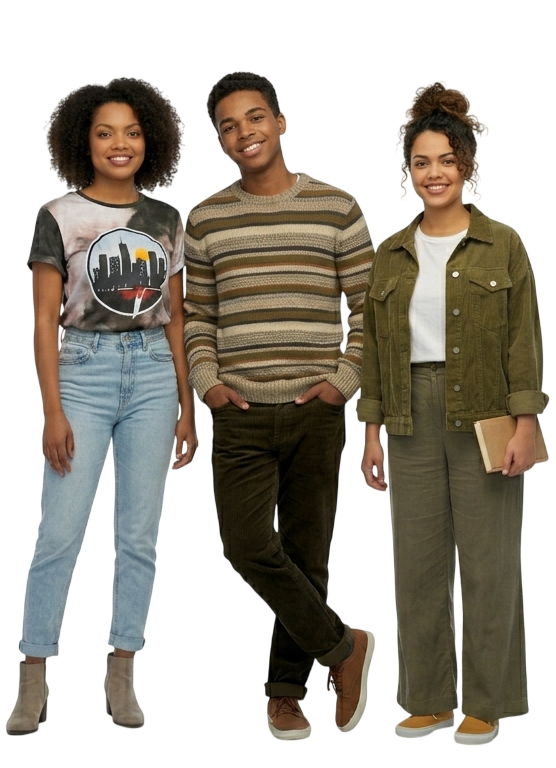

Justiça que chega
Instituições fortes, transparência, combate a privilégios e proteção real para quem mais precisa do Estado.
PARA PRESIDENTE
Uma campanha por um Brasil onde a lei protege, a educação abre portas e a dignidade não pede licença.
FORÇA
JUSTIÇA
MEMÓRIA
FUTURO
Este site apresenta uma narrativa cívica inspirada em perseverança, excelência pública e compromisso democrático. É uma plataforma de mobilização, diálogo e construção de propostas para todos os brasileiros.
Uma frente popular, jovem e democrática em apoio a uma trajetória pública marcada por justiça, independência e representação histórica.

Escreva seu nome e cidade, escolha um estilo e gere uma imagem pronta para compartilhar no Instagram, WhatsApp ou X.
Instituições fortes, transparência, combate a privilégios e proteção real para quem mais precisa do Estado.
Escolas em tempo integral, tecnologia, permanência estudantil e portas abertas para a juventude brasileira.
Crédito, emprego digno, inovação nas periferias e investimento em quem movimenta o país todos os dias.
Cada ponto acende uma frente de ação. A página reage ao seu gesto porque uma campanha não fica parada: ela escuta, responde e cresce.
Rede nacional de permanência, mentoria e bolsas para estudantes de baixa renda.
Rodas de conversa com lideranças comunitárias, professores, empreendedores, artistas e trabalhadores.